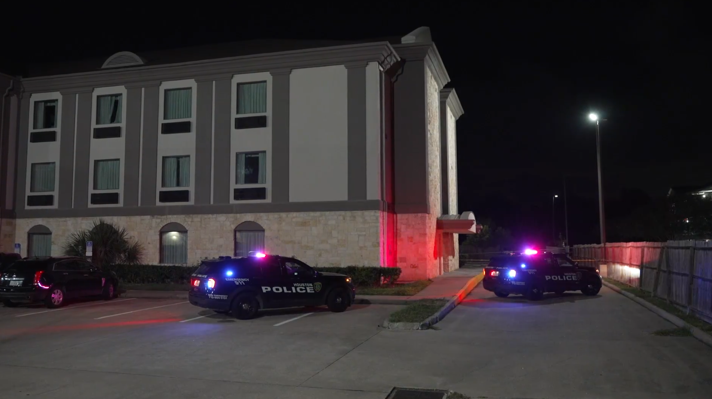

October 03, 2026
Texas Blue Alert Ends With Arrest: Deputy Shot, Patrol SUV Stolen in Channelview


Booking photo and scene still via FOX 26 Houston; headline card by The Night Desk
Texas Blue Alert Ends With Arrest: Deputy Shot, Patrol SUV Stolen in Channelview
A family-disturbance call in Channelview, Texas, on the evening of Wednesday, Sept. 30, spiraled into one of the most brazen attacks on Texas law enforcement in recent memory — and ended, more than 12 hours later, with the suspect pulled out of a backyard shed as his hands went up.
Chase Layne Patin, 25, is in custody and charged with four counts of aggravated assault of a public servant with a firearm — one for each of the four deputies investigators say he fired upon — plus theft of property valued between $30,000 and $150,000 for the stolen marked patrol SUV. The Harris County District Attorney's Office has filed a motion seeking a hearing to deny Patin bail entirely.
What the court documents describe
According to a probable cause affidavit reviewed by FOX 26 Houston, the chain of events began inside Patin's mother's home:
- Patin's mother told investigators her son was destroying his bedroom while searching for something earlier that evening.
- When she tried to leave in her SUV, Patin allegedly demanded her keys. She refused — and he shot a rear tire, according to the filing.
- Patin then followed her back inside the home and fired a shot into the ceiling. His mother called 911 as his behavior grew more aggressive.
Harris County sheriff's deputies responded around 7:45 p.m. to a report of an armed man who had shot his mother's vehicle.
"Investigators say Patin fired at deputies as they arrived," the reporting states. One deputy told investigators she was getting out of her patrol vehicle when Patin fired at her — and, according to the affidavit, she did not have time to draw her weapon before diving for cover.
A sergeant described hearing several shots before seeing Deputy Javier Perez-Garcia collapse with gunshot wounds to his legs. Investigators say Patin then climbed into Perez-Garcia's marked patrol vehicle and drove away.
The filing states the deputy suffered gunshot wounds to both legs and intestinal injuries, underwent surgery, and was in stable condition.
The Blue Alert and the manhunt
The stolen patrol SUV was recovered roughly two miles away, near the East Freeway and Dell Dale Street. Texas DPS issued a statewide Blue Alert Thursday morning — the alert class reserved for suspects who have seriously injured or killed a law enforcement officer and pose an imminent threat.
What followed was an overnight door-to-door manhunt: Harris County deputies, U.S. Marshals, and Harris County Precinct 3 constables canvassed the Channelview neighborhood while cell phones buzzed with the alert.
The break came from residents. Tips about dogs barking and a possible figure near a shed or wood line sent deputies to a property off West Brentwood in Channelview, where they found Patin hiding behind a board inside a shed. He surrendered without further incident. Investigators said there was no known connection between Patin and the people who lived there.
Sheriff Ed Gonzalez thanked the overnight teams: "I'm grateful for the outstanding work of our HCSO teammates and all of our public safety partners who worked throughout the night to locate and apprehend the suspect."
He was wanted before Wednesday night
The part drawing the sharpest scrutiny: Patin was already out on a $45,000 bond in a felon-in-possession-of-a-firearm case, per Crime Stoppers' victim services director Andy Kahan. A condition of that bond required Patin to obtain a GPS ankle monitor — but he was released before the monitor was installed and never returned to get it.
Kahan said Patin had been wanted since July 17, with a bond-forfeiture warrant issued. Before the arrest, Crime Stoppers had offered a $5,000 reward for information leading to him.
Kahan described a criminal history that included four prior felony convictions and prior service of time in the Texas prison system — along with multiple DWI convictions and a weapons offense.
The case is raising hard questions about how missed GPS monitor requirements are tracked, and what happens when someone under pretrial supervision simply never complies. FOX 26 has sought a response from Harris County Pretrial Services; a response was still pending.
What's next
Patin's next court setting was expected Friday, Oct. 2, when the DA's office is expected to argue he should be held without bond. He is presumed innocent unless proven guilty.
Verified against reporting by FOX 26 Houston (probable cause affidavit + Crime Stoppers). The Night Desk will update this story as court proceedings develop.
Graveyard Crew, how does someone with four felonies, an open gun case, and a skipped GPS monitor end up in a position to shoot a deputy — and is this the system working as badly as we all think? Tell us below.
Source: FOX 26 Houston — read the original report
← Back to latest stories